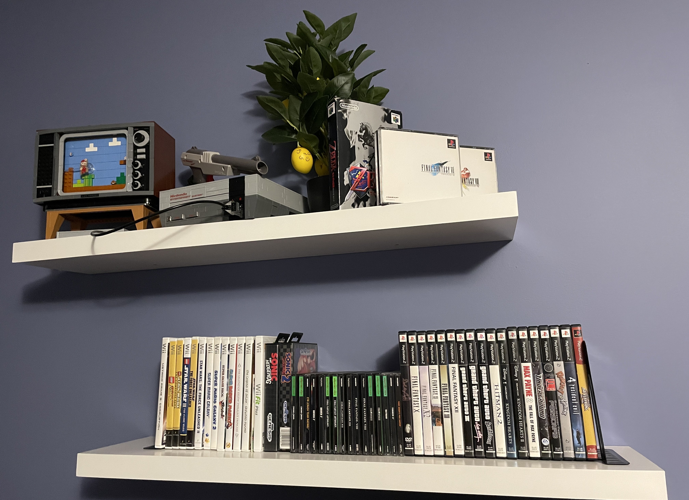
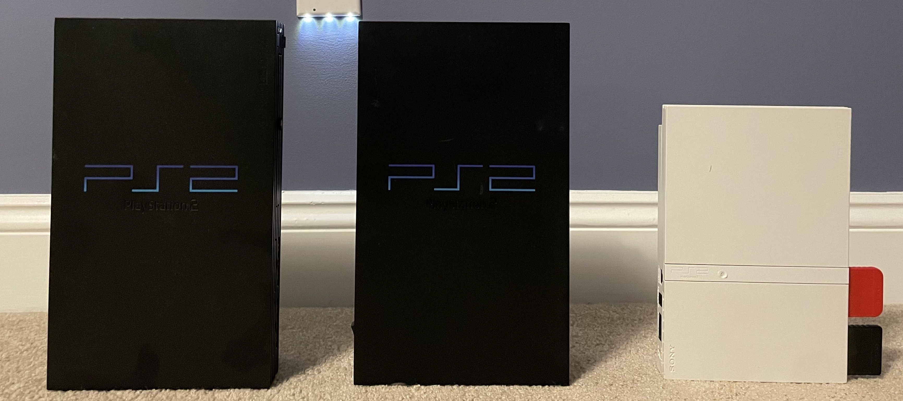
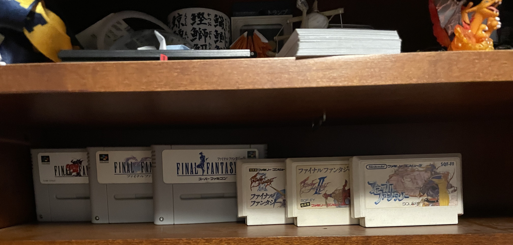

This is my prized wall of old(er) games. I personally love the old jewel cases of the PlayStation 1 games because I was so used to the DVD cases used by the Wii and PS2 games. I have beat a majority of these games, but mostly in high school because I've been too busy at college.

I bought my own PS2 before my uncle gave me his, but the one I bought didn't output the color red and his had a faulty disc drive. I was able to switch the disc drives and changed the disc reader, and it worked for a while, but it didn't play PlayStation 1 games for some reason, so I just bought the white one and it still works well.

This is my collection of Japanese Final Fantasy imports. [Update this text in your HTML file to tell the story behind these specific games!]
I am working on a pixel-art game as a passion project. I hope to be able to share it someday!